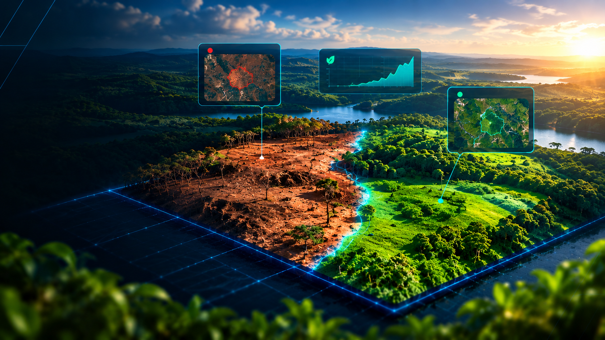

Sobre a plataforma
O GeoProcessamento utiliza modelos de segmentação por inteligência artificial para detectar automaticamente áreas de solo erodido a partir de imagens capturadas por drone. A ferramenta organiza os diagnósticos gerados, permite comparar simulações ao longo do tempo e reúne tudo em relatórios claros, ajudando na tomada de decisão sobre manejo e recuperação do solo.
Novo diagnóstico